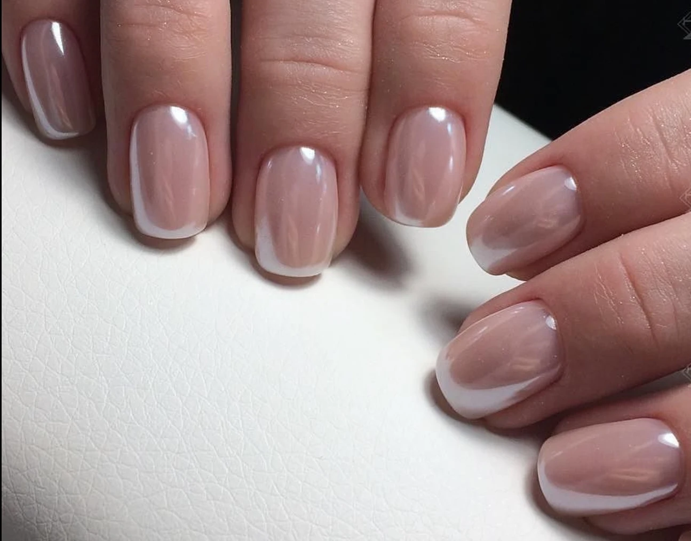
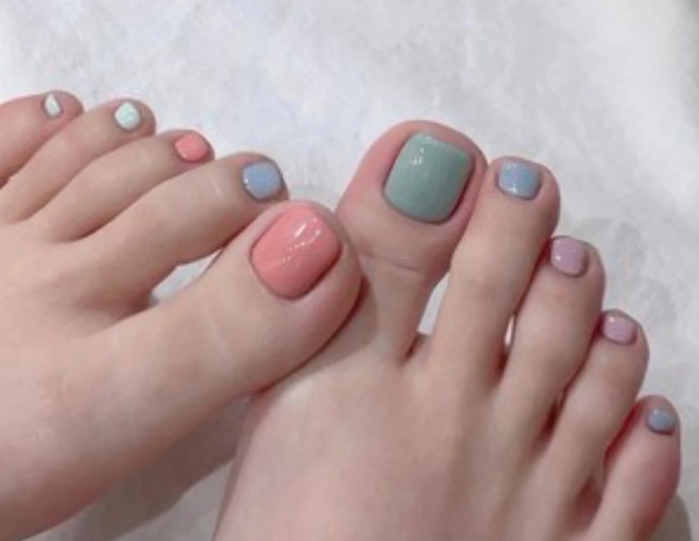
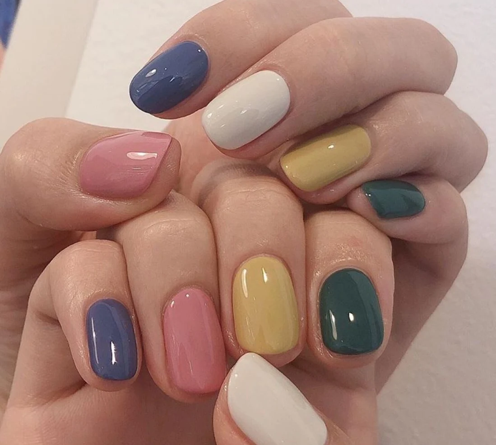

Full Service · Lodi, New Jersey
Manicures, pedicures, and waxing. Walk in or call ahead — we're open six days a week.
ScrollWednesdays only
Book any pedicure on a Wednesday and the massage is on us. No coupon, no catch — just mention it when you come in.
We take our time and we get the details right — clean lines, colors you'll actually love, and a finish that lasts.
We're a small neighborhood salon, and most of our clients have been coming for years. Your technician will remember your shape and your shade. Tools are sanitized for every client, and we won't rush you out of the chair.
No memberships and no upselling — just good work at a fair price.
— The team at June's Art Nail
Classic, gel, and structured sets with hand-painted art on request — from a clean one-color to a full custom design.
Book by phone PEDIUnhurried spa and gel pedicures with proper callus care and a flawless finish — and on Wednesdays, a free 10-minute massage with every one.
Book by phone WAXBrows, lip, face, and body — quick, precise, and as gentle as waxing honestly gets.
Book by phonePrices depend on length, shape, and design. Give us a call at (973) 778-4494 and we'll tell you the price before you sit down.



Bring in a photo of what you want and we'll paint it.
We've been on Passaic Ave for years, and a lot of our clients have been with us that whole time.
Every station gets cleaned before you sit down, and we'll tell you honestly what your nails need — even when the answer is to do less this visit.
Bring a photo, a rough idea, or nothing at all. We'll help you figure out what works and get you out on time.
Plan your visitWalk right in, or call ahead if you'd rather book a time. Don't forget Wednesday pedicures come with a free 10-minute massage.